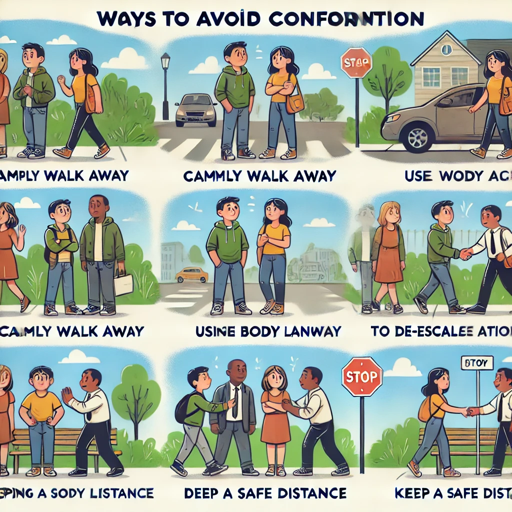

Escape techniques are critical self-defense skills that help individuals free themselves from an assailant’s grip or avoid potentially dangerous situations. These techniques emphasize quick thinking, agility, and targeting the attacker’s weak points. Understanding these principles can significantly increase your chances of staying safe and avoiding harm.
भागने की तकनीकें आत्मरक्षा की महत्वपूर्ण तकनीकें हैं, जो किसी हमलावर की पकड़ से बचने में मदद करती हैं। इन तकनीकों में त्वरित सोच, चुस्ती और हमलावर के कमजोर बिंदुओं पर ध्यान केंद्रित करना शामिल है। इन सिद्धांतों को समझने से सुरक्षित रहने और नुकसान से बचने की आपकी संभावना बढ़ सकती है।
ಬೇಲಿ ತಂತ್ರಗಳು ಸ್ವಯಂ ರಕ್ಷಣೆಯಲ್ಲಿ ಅತ್ಯಂತ ಮುಖ್ಯವಾದವು, ಅಟ್ಟಹಾಸವನ್ನು ತಪ್ಪಿಸಲು ಸಹಾಯ ಮಾಡುತ್ತದೆ. ಈ ತಂತ್ರಗಳು ವೇಗದ ಚಿಂತನೆ, ಚಪಲತೆ ಮತ್ತು ಹಲ್ಲೆಗಾರರ ದುರ್ಬಲತೆಯ ಮೇಲೆ ಕೇಂದ್ರೀಕರಿಸುತ್ತವೆ. ಈ ತತ್ತ್ವಗಳನ್ನು ಅರ್ಥಮಾಡಿಕೊಳ್ಳುವುದರಿಂದ ನೀವು ಸುರಕ್ಷಿತವಾಗಿರುವ ಮತ್ತು ಹಾನಿಯಿಂದ ತಪ್ಪಿಸಿಕೊಳ್ಳುವ ಸಾಧ್ಯತೆಗಳನ್ನು ಹೆಚ್ಚಿಸಬಹುದು.
தப்பிக்கும் நுட்பங்கள் ஒரு தாக்குதலாளரின் பிடியில் இருந்து விடுபடவும், அச்சுறுத்தல்களை தவிர்க்கவும் உதவும் முக்கிய தற்காப்பு திறன்களாகும். இந்த நுட்பங்கள் விரைவு சிந்தனை, கூர்மை மற்றும் தாக்குதலாளரின் பலவீன புள்ளிகளை குறிவைக்கும் திறன்களை மிகைப்படுத்துகின்றன. இந்தக் கொள்கைகளைப் புரிந்து கொள்வதன் மூலம், நீங்கள் பாதுகாப்பாக இருக்கும் வாய்ப்பு அதிகரிக்கப்படுகிறது.
Core Principles of Escape Techniques
भागने की तकनीकों के मूल सिद्धांत
ತಂತ್ರಗಳ ಮೂಲ ತತ್ವಗಳು
தப்பிக்கும் நுட்பங்களின் அடிப்படைத் தத்துவங்கள்
The goal of escape techniques is to create an opportunity to distance yourself from the attacker. Here are some core principles that form the foundation of effective escape techniques:
भागने की तकनीकों का लक्ष्य हमलावर से दूरी बनाना है। यहां कुछ मूल सिद्धांत दिए गए हैं जो प्रभावी भागने की तकनीकों का आधार बनाते हैं:
ತಂತ್ರಗಳ ಮುಖ್ಯ ಉದ್ದೇಶ ಹಲ್ಲೆಗಾರರಿಂದ ದೂರವಿರುವ ಅವಕಾಶವನ್ನು ಸೃಷ್ಟಿಸುವುದು. ಪರಿಣಾಮಕಾರಿ ತಂತ್ರಗಳ ಆಧಾರ ಸ್ಥಂಬಗಳನ್ನು ರೂಪಿಸುವ ಕೆಲವು ಮೂಲ ತತ್ತ್ವಗಳು ಇಲ್ಲಿವೆ:
தப்பிக்கும் நுட்பங்களின் நோக்கம் தாக்குதலாளரிடமிருந்து தூரத்தை உருவாக்குவதே. மிகச்சிறந்த தப்பிக்கும் நுட்பங்களின் அடிப்படைத் தத்துவங்கள் சிலவற்றைப் பார்க்கலாம்:
- Leverage and Angles: Understanding how to use body leverage to break free from holds or grips. The key is to apply force at specific angles to exploit the weaknesses of an attacker.
- Target Vulnerable Areas: Focus on sensitive areas like the eyes, nose, throat, or groin to disorient the attacker. Even a brief distraction can provide an opportunity to escape.
- Distractions: Use verbal commands, sudden movements, or objects in your surroundings to create opportunities for escape. A loud shout or throwing an object can divert the attacker’s focus.
- लीवरेज और एंगल्स: पकड़ से मुक्त होने के लिए शरीर के लीवरेज का उपयोग करना सीखें। कुंजी है विशेष कोणों पर बल लगाना ताकि हमलावर की कमजोरियों का फायदा उठाया जा सके।
- कमजोर जगहों को निशाना बनाना: आँख, नाक, गला या कमर जैसे संवेदनशील क्षेत्रों पर ध्यान दें। यहां तक कि एक क्षणिक ध्यान भंग भी भागने का अवसर दे सकता है।
- ध्यान भटकाना: मौखिक कमांड, अचानक हरकतें, या आसपास की चीजों का उपयोग करें ताकि भागने का अवसर मिल सके। जोर से चिल्लाना या कोई वस्तु फेंकना हमलावर का ध्यान भटका सकता है।
- ಲೇವರೆಜ್ ಮತ್ತು ಕೋನಗಳು: ಹಿಡಿತದಿಂದ ಬಿಡಿಸಲು ದೇಹದ ಲೇವರೆಜ್ ಅನ್ನು ಬಳಸುವುದು. ಹಲ್ಲೆಗಾರರ ದುರ್ಬಲತೆಗಳನ್ನು ಹನನಿಸಲು ನಿರ್ದಿಷ್ಟ ಕೋನಗಳಲ್ಲಿ ಬಲವನ್ನು ಅನ್ವಯಿಸುವುದು ಮುಖ್ಯ.
- ದೌರ್ಬಲ್ಯ ಪ್ರದೇಶಗಳನ್ನು ಗುರಿಯಾಗಿಸಲು: ಕಣ್ಣುಗಳು, ಮೂಗು, ಕಂಠ ಅಥವಾ ತೊಡೆಯ ಮೇಲೆ ಗಮನಹರಿಸಿ. ಒಂದು ಕ್ಷಣದ ತೊಂದರೆ ಕೂಡ ಬಿಡುವಿಗೆ ಅವಕಾಶ ಕೊಡುತ್ತದೆ.
- ಗಮನ ಹರಿಸಲು: ಶಬ್ದದ ಆದೇಶಗಳು, ಆಕಸ್ಮಿಕ ಚಲನೆಗಳು, ಅಥವಾ ಸುತ್ತಲಿನ ವಸ್ತುಗಳನ್ನು ಬಳಸುವುದು ಬಿಡುವಿಗೆ ಅವಕಾಶ ಸೃಷ್ಟಿಸುತ್ತದೆ. ಗಟ್ಟಿಯಾಗಿ ಕೂಗುವುದು ಅಥವಾ ವಸ್ತುವನ್ನು ಎಸೆಯುವುದು ಹಲ್ಲೆಗಾರರ ಗಮನವನ್ನು ಹರಿಸಲು ಸಹಾಯ ಮಾಡುತ್ತದೆ.
- நுட்பங்கள் மற்றும் கோணங்கள்: பிடியில் இருந்து விடுபட உடல் நுட்பங்களைப் பயன்படுத்திக் கொள்ள வேண்டும். குறிப்பிட்ட கோணங்களில் பலத்தைச் செயல்படுத்துவது தாக்குதலாளரின் பலவீனங்களைப் பயன்படுத்தி விடுபட உதவும்.
- பலவீனமான பகுதிகளை குறிவைக்கவும்: கண்கள், மூக்கு, தொண்டை, அல்லது குளியல் போன்ற பகுதிகளை குறிவைத்து தாக்கவும். சில நொடிகளுக்கான திசையமைப்பு கூட விடுபட உதவும்.
- திசையமைப்பு: வாய்மொழி கட்டளைகள், திடீர் நகர்வுகள், அல்லது சுற்றியுள்ள பொருட்களைப் பயன்படுத்தி தப்பிக்க வேண்டும். ஒரு சத்தமாக கூச்சல் விடுவது அல்லது ஒரு பொருளை எறிவது தாக்குதலாளரின் கவனத்தை திசையற்ற இடம் செய்யும்.
Practical Techniques
प्रायोगिक तकनीकें
ಪ್ರಾಯೋಗಿಕ ತಂತ್ರಗಳು
நடைமுறை நுட்பங்கள்
Some practical escape techniques include simple yet effective moves that anyone can learn. Practicing these regularly can improve your confidence and increase your ability to react effectively under pressure.
कुछ प्रायोगिक भागने की तकनीकों में सरल लेकिन प्रभावी चालें शामिल हैं जिन्हें कोई भी सीख सकता है। इन्हें नियमित रूप से अभ्यास करने से आपका आत्मविश्वास बढ़ेगा और दबाव में प्रभावी ढंग से प्रतिक्रिया देने की आपकी क्षमता बढ़ेगी।
ಕೆಲವು ಪ್ರಾಯೋಗಿಕ ತಂತ್ರಗಳಲ್ಲಿ ಸರಳ ಆದರೆ ಪರಿಣಾಮಕಾರಿ ಚಲನೆಗಳು ಸೇರಿವೆ, ಅದನ್ನು ಯಾರೂ ಕಲಿಯಬಹುದು. ಈ ತಂತ್ರಗಳನ್ನು ನಿಯಮಿತವಾಗಿ ಅಭ್ಯಾಸ ಮಾಡುವುದರಿಂದ ನಿಮ್ಮ ಆತ್ಮವಿಶ್ವಾಸ ಹೆಚ್ಚುತ್ತದೆ ಮತ್ತು ಒತ್ತಡದ ಹೊತ್ತಿನಲ್ಲಿ ಪರಿಣಾಮಕಾರಿಯಾಗಿ ಪ್ರತಿಕ್ರಿಯಿಸುವ ನಿಮ್ಮ ಸಾಮರ್ಥ್ಯ ಹೆಚ್ಚುತ್ತದೆ.
சில நடைமுறை தப்பிக்கும் நுட்பங்களில் எளிமையான, ஆனால் விளைவான நகர்வுகள் உள்ளன, இதை யாரும் கற்றுக்கொள்ள முடியும். அவற்றை அடிக்கடி பயிற்சி செய்வது உங்கள் தன்னம்பிக்கையை அதிகரிக்கும்.
- Wrist Release: Rotate your wrist against the attacker's thumb to break free. The thumb is the weakest part of the grip, and rotating against it can help you release quickly.
- Bear Hug Escape: If grabbed from behind, use your elbows to strike the attacker's stomach or step on their foot. A sharp elbow strike can cause enough pain to make the attacker loosen their grip.
- Clothing Grab Defense: Pull the attacker's hands away or strike vulnerable points such as their wrist or fingers to escape quickly. Use your free hand to control their grip while creating an opportunity to run.
- कलाई रिलीज: हमलावर के अंगूठे के खिलाफ अपनी कलाई को घुमाएं ताकि पकड़ से मुक्त हो सकें। अंगूठा पकड़ का सबसे कमजोर हिस्सा होता है, और इसके खिलाफ घुमाने से आप जल्दी मुक्त हो सकते हैं।
- बेयर हग से बचाव: यदि पीछे से पकड़ा जाए, तो अपनी कोहनियों से हमलावर के पेट पर मारें या उसके पैर पर कदम रखें। तेज कोहनी से मारने से हमलावर को दर्द होता है और उसकी पकड़ ढीली पड़ सकती है।
- कपड़े की पकड़ से बचाव: हमलावर के हाथों को खींचें या उनकी कलाई या उंगलियों पर वार करें ताकि जल्दी से भाग सकें। भागने का अवसर बनाने के लिए अपने मुक्त हाथ से उनकी पकड़ को नियंत्रित करें।
- ಕೈಗಡಸು ಬಿಡಿ: ಹಲ್ಲೆಗಾರರ ಅಂಗುಲಿಗೆ ವಿರುದ್ಧವಾಗಿ ನಿಮ್ಮ ಕೈಯನ್ನು ತಿರುಗಿಸಿ. ಅಂಗುಲು ಹಿಡಿತದ ದುರ್ಬಲ ಭಾಗವಾಗಿದ್ದು, ಇದಕ್ಕೆ ವಿರುದ್ಧವಾಗಿ ತಿರುಗಿಸುವುದು ನಿಮಗೆ ತಕ್ಷಣ ಬಿಡಿಸಿಕೊಳ್ಳಲು ಸಹಾಯ ಮಾಡುತ್ತದೆ.
- ಬೆಕ್ಕಿನ ಮುರಿಯುವಿಕೆ: ಹಿಂದಿನಿಂದ ಹಿಡಿದಾಗ, ನಿಮ್ಮ ಎಲ್ಬೊಗಳನ್ನು ಹಲ್ಲೆಗಾರರ ಹೊಟ್ಟೆಯಲ್ಲಿ ಬಡಿದುಕೊಳ್ಳಿ ಅಥವಾ ಅವರ ಕಾಲಿಗೆ ಹೆಜ್ಜೆಯಿಡಿ. ಎಲ್ಬೊ ಬಾರಿಸುವುದು ಸಾಕಷ್ಟು ನೋವುಂಟುಮಾಡುತ್ತದೆ ಮತ್ತು ಹಲ್ಲೆಗಾರರ ಹಿಡಿತವನ್ನು ಸಡಿಲಿಸುತ್ತದೆ.
- ಬಟ್ಟೆಯ ಹಿಡಿತ ನಿರೋಧನೆ: ಹಲ್ಲೆಗಾರರ ಕೈಗಳನ್ನು ಎಳೆದು ಅಥವಾ ಅವರ ಕೈಯ ಅಥವಾ ಬೆರಳುಗಳನ್ನು ಹೊಡೆಯುವ ಮೂಲಕ ತ್ವರಿತವಾಗಿ ಬಿಡಿಸಿಕೊಳ್ಳಿ. ಓಡುವ ಅವಕಾಶವನ್ನು ಪಡೆಯಲು ನಿಮ್ಮ ಮುಕ್ತ ಕೈಯನ್ನು ಅವರ ಹಿಡಿತವನ್ನು ನಿಯಂತ್ರಿಸಲು ಬಳಸಿ.
- மணிக்கட்டு விடுவிப்பு: தாக்குதலாளரின் கட்டையைக் கடக்க உங்களைத் திருப்பவும்.
- திடீர் மோசம் முறை: பாதையில் உங்கள் நேரத்தை ஒதுக்கவும்.
- தப்பிக்க வாய்ப்பு: ஒரு சக்தியை அடைந்தால், மிதிவைத் தவிர

Remember, the best way to stay safe is to avoid confrontation whenever possible. These techniques are a last resort and should be used when escape is your only option. Practicing these moves regularly can help you react without hesitation, potentially saving your life in dangerous situations.
याद रखें, सुरक्षित रहने का सबसे अच्छा तरीका संघर्ष से बचना है। इन तकनीकों का उपयोग अंतिम विकल्प के रूप में करें। इन चालों का नियमित रूप से अभ्यास करने से आप बिना झिझक प्रतिक्रिया कर सकते हैं और खतरनाक स्थितियों में अपनी जान बचा सकते हैं।
ನೆನಪಿಡಿ, ನಿಮ್ಮನ್ನು ಸುರಕ್ಷಿತವಾಗಿರಿಸಲು ಸಾಂಘರ್ಷವನ್ನು ತಪ್ಪಿಸುವುದು ಉತ್ತಮ ಮಾರ್ಗವಾಗಿದೆ. ಈ ತಂತ್ರಗಳನ್ನು ಕೊನೆಯ ಮಾರ್ಗವಾಗಿ ಬಳಸಬೇಕು. ಈ ಚಲನಗಳನ್ನು ನಿಯಮಿತವಾಗಿ ಅಭ್ಯಾಸ ಮಾಡುವುದರಿಂದ ನೀವು ಹಿಂಜರಿಯದೆ ಪ್ರತಿಕ್ರಿಯಿಸಬಹುದು ಮತ್ತು ಅಪಾಯದ ಪರಿಸ್ಥಿತಿಗಳಲ್ಲಿ ನಿಮ್ಮ ಪ್ರಾಣವನ್ನು ಉಳಿಸಬಹುದು.
நீங்கள் பாதுகாப்பாக இருக்கிறீர்கள் என்பதை உறுதி செய்ய சண்டையைத் தவிர்க்கவும். இந்த தற்காப்பு முறைகள் ஒரு கடைசித் தப்பிக்க வாய்ப்பாகும். அவற்றை அடிக்கடி பயிற்சி செய்வது, ஆபத்தான சூழ்நிலைகளில் உங்கள் உயிரைக் காப்பாற்ற உதவலாம்.